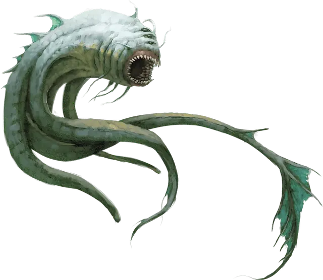

Аболет
Aboleth
Большая Аберрация, законно-злая

Класс Доспеха 17 (природный доспех)
Хиты 135 (18к10 + 36)
Скорость 10 футов, плавая 40 футов
| мод | спас | ||
|---|---|---|---|
| СИЛ | 21 | +5 | +5 |
| ЛОВ | 9 | −1 | −1 |
| ТЕЛ | 15 | +2 | +6 |
| мод | спас | ||
|---|---|---|---|
| ИНТ | 18 | +4 | +8 |
| МДР | 15 | +2 | +6 |
| ХАР | 18 | +4 | +4 |
Навыки Восприятие +10, История +12
Чувства тёмное зрение 120 футов, пассивное Восприятие 20
Языки Глубинная речь, Телепатия 120 фт.
Опасность 10 (5900 опыта)
Бонус мастерства +4
Среда обитания Подземье
Особенности
Амфибия. Аболет может дышать и воздухом и под водой.
Слизистое облако. Находясь под водой, аболет окружен слизью. Существа, которые касаются аболета или попадают по нему рукопашной атакой, находясь в пределах 5 футов от него, должны совершить спасбросок Телосложения Сл 14. При провале существо заболевает на 1к4 часа. Больные существа могут дышать только под водой.
Зондирующая телепатия. Если существо общается телепатически с аболетом, и аболет при этом видит это существо, он может узнать самые потаенные желания существа.
Действия
Мультиатака. Аболет совершает три атаки Щупальцем.
Щупальце. Рукопашная атака оружием: +9 к попаданию, досягаемость 10 футов, одна цель. Попадание: 12 (2к6 + 5) дробящего урона. Если цель — существо, она должна преуспеть в спасброске Телосложения Сл 14, иначе станет заболевшей. Заболевание не проявляется в течение 1 минуты, и может быть удалено любой магией, лечащей болезни. Через 1 минуту кожа больного существа становится прозрачной и склизкой, существо не может восстанавливать хиты кроме как будучи под водой, и болезнь можно удалить только полным исцелением [heal] или другим лечащим болезни заклинанием как минимум 6-го уровня. Если существо находится вне водоема, оно получает урон кислотой 6 (1к12) каждые 10 минут, если вода не попала на кожу до истечения 10 минут.
Хвост. Рукопашная атака оружием: +9 к попаданию, досягаемость 10 футов одна цель. Попадание: 15 (3к6 + 5) дробящего урона.
Порабощение (3/день). Аболет нацеливается на одно существо, которое видит в пределах 30 футов от себя. Цель должна преуспеть в спасброске Мудрости Сл 14, иначе она станет магическим образом очарованной. Эффект оканчивается со смертью аболета, либо когда он перестанет быть на одном с целью плане. Очарованная цель находится под контролем аболета, и не может совершать реакции. Цель и аболет могут общаться телепатически на любой дистанции.
Каждый раз, когда очарованная цель получает урон, она может повторить спасбросок. В случае успеха эффект заканчивается. Не более чем один раз в 24 часа цель может также повторить спасбросок, но при этом она должна находиться как минимум в 1 миле от аболета.
Легендарные действия
Аболет может совершить 3 легендарных действия, выбирая из представленных ниже вариантов. За один раз можно использовать только одно легендарное действие, и только в конце хода другого существа. Аболет восстанавливает использованные легендарные действия в начале своего хода.
Обнаружение. Аболет совершает проверку Мудрости (Восприятие).
Удар хвостом. Аболет совершает одну атаку Хвостом.
Психическое истощение (стоит 2 действия). Одно очарованное аболетом существо получает урон психической энергией 10 (3к6), и аболет восстанавливает хиты, равные урону, который получило существо.
Логово
Логова аболетов обычно можно найти в подземных озерах или скалистых глубинах океана, часто в окружении руин, оставшихся от древних городов аболетов. Большую часть времени аболеты проводят под водой, поднимаясь на поверхность, чтобы пообщаться с посетителями или безумными последователями.
Действия логова
При сражении в своем логове аболет может воззвать к окружающей магии и использовать действие логова. При значении инициативы «20» (в случае ничьей проигрывает всем конкурентам) аболет совершает действие логова, чтобы вызвать один из следующих эффектов:
• Аболет накладывает заклинание воображаемая сила [phantasmal force] (компоненты не нужны) на любое количество существ, которое он видит в пределах 60 футов от себя. Пока аболет поддерживает концентрацию на эффекте, он не может совершать другие действия логова. Если цель успешно совершила спасбросок или эффект закончился для нее, цель получает иммунитет к действию логова воображаемая сила этого аболета на ближайшие 24 часа, хотя может решить стать целью эффекта.
• Воды в пределах 90 футов от аболета формируют водоворот. Все стоящие на земле в пределах 20 футов от такого водоворота существа должны преуспеть в спасброске Силы Сл 14, иначе будут утянуты на расстояние до 20 футов в воду и сбиты с ног. Аболет не может использовать это действие логова снова, пока не использует другое.
• Вода в логове аболета магическим образом становится проводником его ярости. Аболет может выбрать целью любое количество существ, которое он видит в воде в пределах 90 футов от себя. Цель должна преуспеть в спасброске Мудрости Сл 14, иначе получит урон психической энергией 7 (2к6). Аболет не может использовать это действие логова снова, пока не использует другое.
Местные эффекты
Область вокруг логова аболета изменяется из-за присутствия этого существа. Обычно это один или несколько из следующих эффектов:
• Подземные поверхности в пределах 1 мили от логова становятся скользкими и влажными. Это труднопроходимая местность.
• Источники воды в пределах 1 мили от логова становятся загрязненными. Врагов аболета, выпивших такой воды, стошнит через несколько минут.
• Аболет может действием создать иллюзорный образ самого себя в пределах 1 мили от логова. Копия может появиться в любой области, которую аболет видел ранее, или в области, которую видит очарованное аболетом существо. Созданный образ длится, пока аболет сохраняет концентрацию, как если бы он концентрировался на заклинании. Хотя образ нематериален, он выглядит, звучит и двигается как аболет. Аболет может чувствовать, говорить и использовать телепатию в точке, где находится иллюзия, как если бы сам находился в этом месте. Если образ получает урон, он исчезает.
Со смертью аболета первые два эффекта исчезают за 3к10 дней.
Описание
«АБОЛЕТЫ МОГУТ БЫТЬ СТАРШЕ БОГОВ. ПОЛУЧАЕТСЯ, ЧТО ДО ПОЯВЛЕНИЯ БОЖЕСТВ ЭТИ КОШМАРНЫЕ ТВАРИ ФОРМИРОВАЛИ ВСЕЛЕННУЮ? СТРАШНО ПОДУМАТЬ».
— ВАКИР ЗЕХ’Р, ГИТЦЕРАЙСКИЙ ФИЛОСОФ И АВТОР КНИГИ «ДАЛЬНИЙ ПРЕДЕЛ: РЕАЛЬНЫЙ И НЕТ»
До прихода богов аболеты скрывались в первичных океанах и подземных озерах. Они захватили контроль над развивающимися жизненными формами в царстве смертных, превратив их в своих рабов. Их власть уподобила их богам. Затем появились истинные боги, разбили империю аболетов и освободили их рабов.
Но аболеты этого никогда не забывали.
Вечная память. У аболетов безупречная память. Они передают знания и опыт из поколения в поколения. Поэтому обида за поражение от рук богов прекрасно сохранилась в их разуме.
Разум аболетов это сокровищница древних знаний, отсылающих к доисторическим моментам, и помнят они это очень ясно. Они терпеливо и хитро плетут свои заговоры на протяжении эпох. Мало кто может постичь глубину этих планов кроме самих аболетов.
Боги озер. Аболеты обустраиваются в водных средах, в том числе в безднах океанов, глубоких озерах и Стихийном Плане Воды. В этих областях и землях, примыкающим к ним, аболеты подобны богам, требующим поклонения и повиновения от своих подданных. Пожирая других существ, аболеты обогащаются опытом и знаниями своей добычи, которые они добавляют к вечным воспоминаниям.
Аболеты используют свои телепатические способности, чтобы читать мысли существ и узнавать их желания. Они используют эти знания, чтобы обеспечить лояльность существ в обмен на выполнение этих желаний. В своем логове аболет может, с помощью своих сил, подменить чувства своих последователей, внушая им иллюзию обещанного вознаграждения.
Враги богов. Крушение власти аболетов навсегда осталось в их вечных воспоминаниях, так как аболеты никогда по-настоящему не умирают. Если организм аболета уничтожается, его дух возвращается на Стихийный План Воды, где в течение нескольких дней или месяцев для него создается новое тело.
Главная цель аболетов — свергнуть богов и вернуть контроль над миром. Скрываясь на протяжении эпох, аболеты разрабатывают свой план для идеального исполнения.